交互设计中的一些原则
目录
1.背景介绍
2.知识剖析
3.常见原则
4.参考文献
5.更多讨论
1.背景介绍
首先声明，产品经理的主要着眼点还是应该在版本规划，产品迭代，概念评审，需求分析，竞品分析，资源协调这些方面。
但有些小公司，没有专门的交互设计，因此产品经理也会兼职交互的工作，所以作为产品新人，有必要先去做做交互设计，因为交互设计是你理解用户需求、了解产品逻辑最好的一个基础性工作，但一定要记住产品经理的工作重心，多思辨，能执行，不要陷进交互设计工作中去。
2.知识剖析
什么是交互？
比较喜欢的定义：所谓交互，即输入和输出。
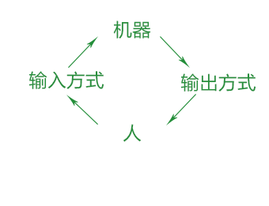
认知心理学理论将人比喻成计算机，人像计算机一样对外界信息进行加工，如下图所示：
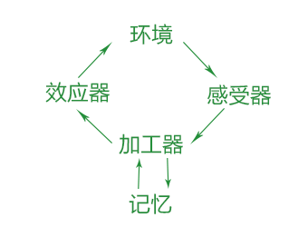
交互设计原则
包括：格式塔心理学原则、尼尔森可用性原则、尼尔森F视觉模型、Heuristic Evaluation十原则、费茨定律、席克定律、7+2法则、2秒原理、2/8法则、3次点击法则、界面黄金8法则、jakob nielson原则、KANO模型、0123简单法则、MVP法则、婴儿鸭综合症、包豪斯理念、泰思勒定律、防错原则、奥卡姆剃刀原理、maya法则、信噪比法则、序列效应、功能可见性原则、成本效益、古腾堡图表法、交互易用性五大法则、马斯洛需求层次理论…
以上部分理论可能意思相近或重复。
3.常见原则
格式塔心理学原则
接近性原理；相似性原理；连续性原理；封闭性原理；对称性原理；主体/背景原理；共同命运原理。
A、相似原理：相等或相似的元素形成整体或群体。如下图左图中，你会不自觉地认为它是纵向排列的，而右图中是横向排列。
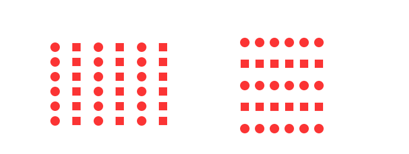
具体应用：如网站的导航，使用不同颜色即可很容易将一级导航和二级导航区分开；再比如淘宝首页的横向标签导航中，“天猫”、“聚划算”和“二手”这三个板块和同一排的其他板块比较，使用了更大的字体更鲜艳的颜色，通过这种方法来强调这三个板块的与其他板块的重要性不同。
B、接近原理：紧密靠在一起的元素形成整体或群体。比如下图中，你会不自觉地把它分成左右各一组。
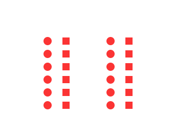
具体应用：接近原则告诉我们如果你希望将多个元素进行分类，那么让同一类元素靠近在一起是个不错的选择。比如iPhone的“通用”界面：
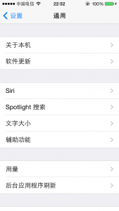
C、闭合原理：我们倾向于将图形中缺失的部分“填满”。如下图，你会不自觉地认为它是个三角形，实际上它们只是几根线条而已。
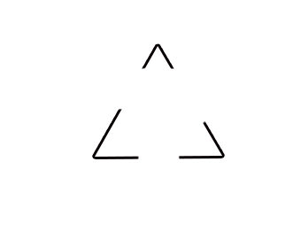
具体应用：下面两个方案，右边的方案运用了闭合原则，将标题放在未闭合的线框线上，却起到了很好的分组效果。
NN Group最经典的Heuristic Evaluation的十原则
系统状态可见性原则
可视性原则：系统状态有反馈，等待时间要合适。
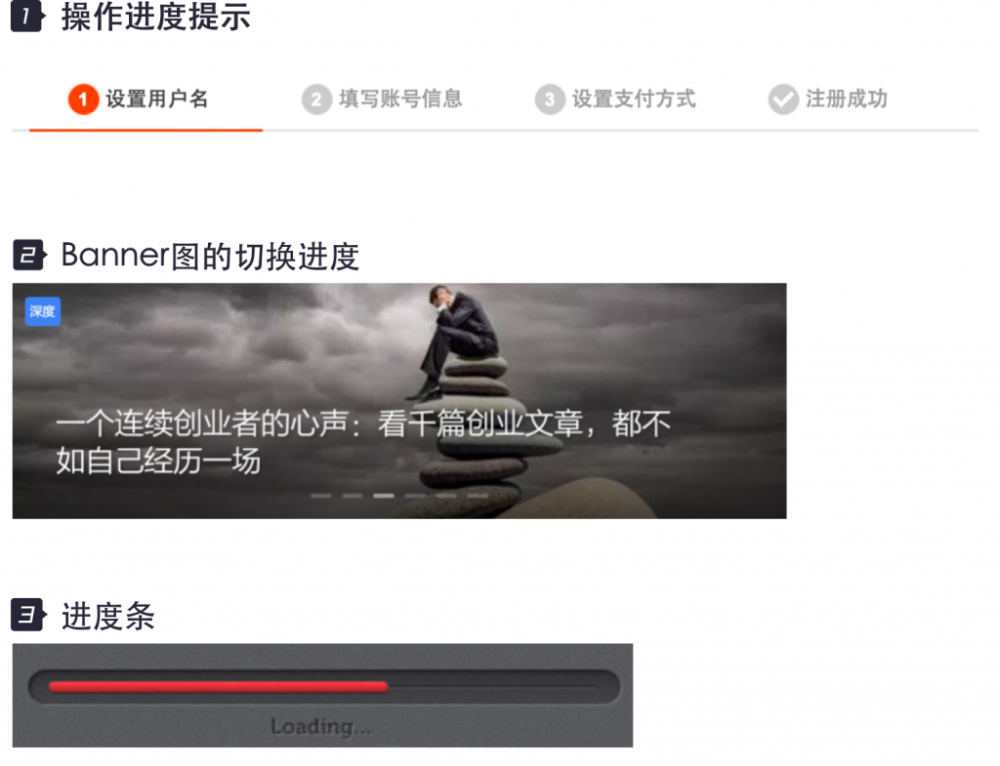
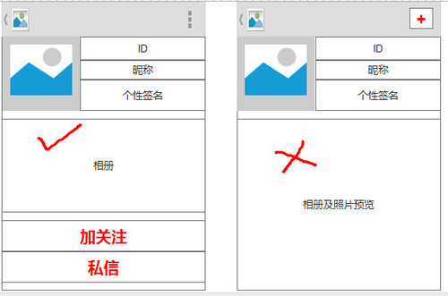
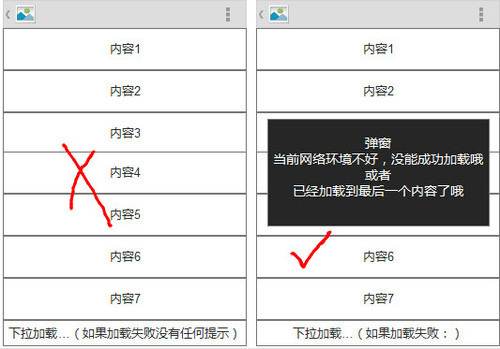
总结：提高产品状态的可视化程度，从而提高用户对自己在使用系统过程的情况的透明度。
系统与现实世界的匹配性
系统应该讲用户的语言，用单词，短语和概念让用户感觉到熟悉，而不是用面向系统的术语来面对用户。同时按照现实世界的惯例，让信息出现在自然和逻辑顺序中。
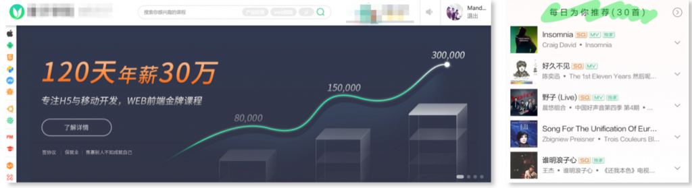
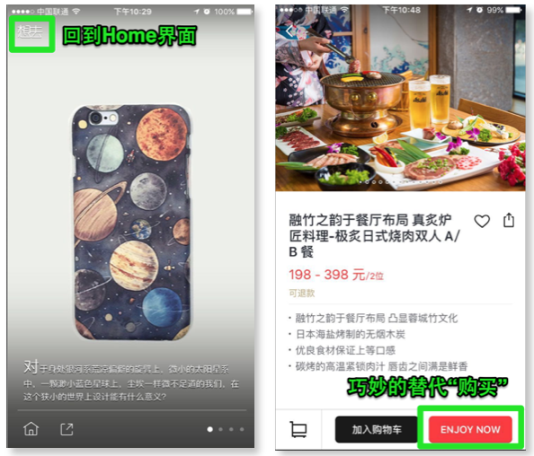
总结：
1.从用户的角度出发，推荐Banner内容，用户可以花更好的时间明了这些滑动的Banner是“可能适合我的”课程。我们可以在产品的细节处继续使用user’s language来提高用户的UE。
2.根据用户的日常行为，判断用户的偏好，做个性推荐也是这个原则的案例之一，这类案例用得最多的是在购物类、音乐类、阅读类应用。
3.用户产品的名字代替“首页”类的形容词，解决从用户角度体现内容和意图的问题，在细节处使用user’s language来提高用户的体验感。
增加用户操作感和自由度
用户往往会不经意选择错误的系统功能，那么产品设计就需要一个明确标明“紧急出口”的状态或者功能规避不必要的操作，譬如：支持撤销和重做。

总结：
从用户体验的角度来看，自动切换的信息在“播放”时需要放慢速度，通过内容本身或者配色去调亮引导dots，可以增加用户的操作感。另外，对用户可能出现反悔操作的功能，应该提供撤销和重做的入口，让用户能更加自如的使用你的产品。
一致性及标准化
在一个系统或者应用中，用户不应该想知道不同的单词，或者理解同一个功能的被展示出不同情况的原因。对于一致性，浅显易懂，现在普遍都用的很好，那么对于标准化，很多网站或者app，特别是新的产品，开始通过衍生自己的LOGO、品牌，充分洗脑用户，强化用户对自己产品的记忆点。甚至可以根据自己的产品定位，创新一类icon等，通过图形的表达让用户更加对你的产品记忆深刻。
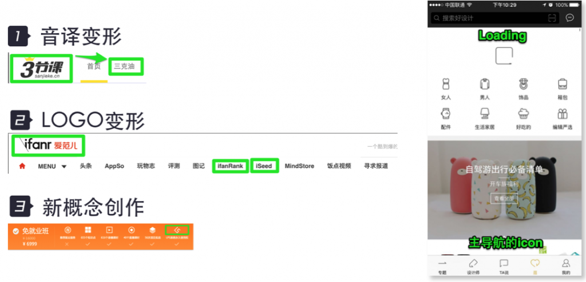
总结：
适当的给自己的产品拟定标准化的记忆库，不但让用户体验你的产品时，觉得走心，也会让用户在不经意间把你的产品记得牢牢的。
预防错误
在使用系统或者产品的时候，巧妙的设计比好的错误提示更加能弥补不足。最好能在用户进行下一步之前，避免掉低级的错误，让用户的使用过程是舒服顺畅的。
比如下图的登录页面，在手机号码的位数达到11位之前，“获取短信验证码”按钮是处于置灰状态的，无非进行点击。

下面这个例子，是在用户输入了昵称后，就立马展示“该昵称已被占用”，提醒用户及时修改。
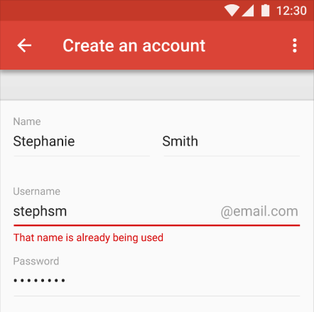
提供解决方案
这个原则，是指当用户进行了错误操作之后，为用户提供解决方案。比如下面这个例子，当网络不好的时候，页面无法展现内容，于是展示一个“未获取到内容”的空页面，并提示“请点击页面重试”，让用户可以尝试点击页面刷新出内容。
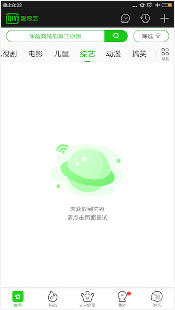
尽量少的让用户输入，输入时尽量多给出参考

美与简单的设计
奥卡姆剃刀原则，极简
“如无必要，勿增实体”
不要做功能的堆积
若有两个相等的功能设计，取最简单的，除非用户真的需要，否则不要增加功能和交互
做正确的事比正确做事更重要
如何限制用户的行为？增加行为实现的难度。

尼尔森F型视觉模型
我们在第一次观看页面时，视线会呈 F的形状关注页面
1.先从顶部开始从左到右水平移动
2.目光再下移开始从左到右观察但是长度会相对短些
3.以较短的长度向下扫视，形成一个 F形状，此时我们的阅读速度较慢，更为系统和条理性
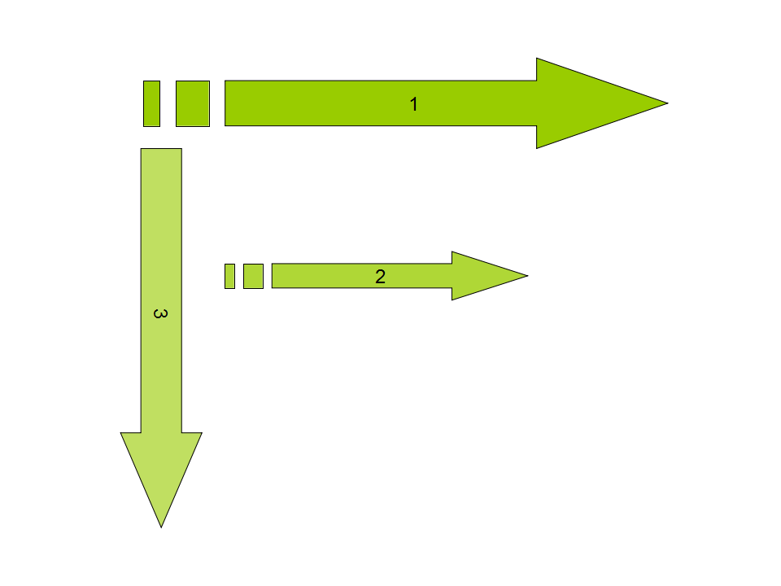
根据尼尔森F模型，我们可以得出几个心理暗示：
用户快速扫视时，具体的文字并不重要
多用小标题、短句引起阅读者注意
将重要的内容放在最上边
4.参考文献
《设计心理学》
参考一：交互设计与心理学
参考二： 交互设计原则解析：心理模型、错误处理
参考三：交互设计原则有哪些？
5.更多讨论
鸣谢
感谢大家观看